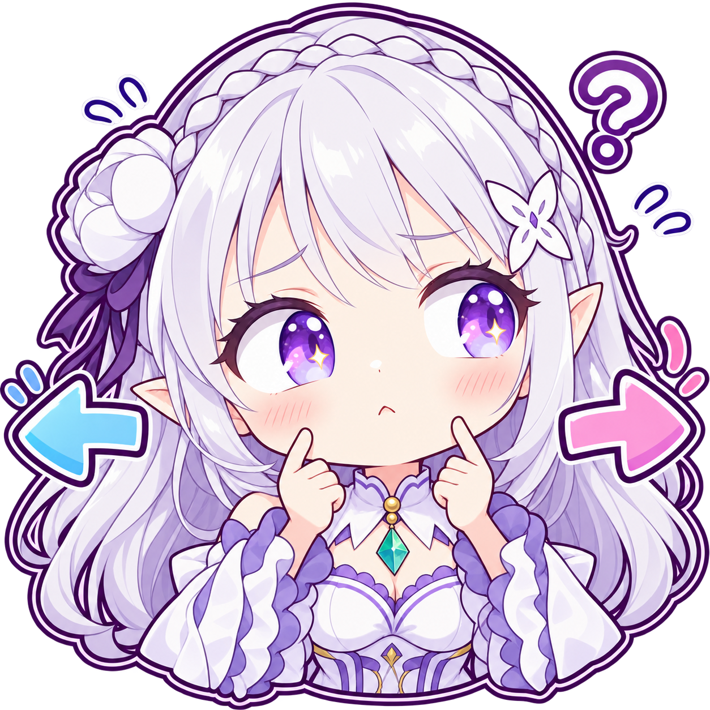
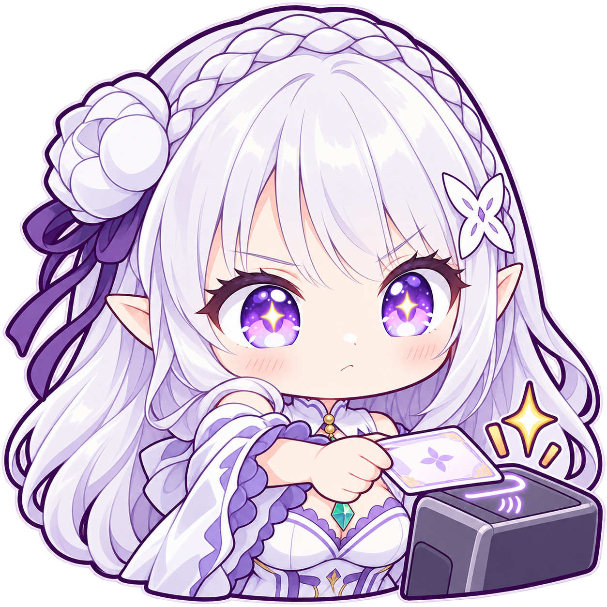
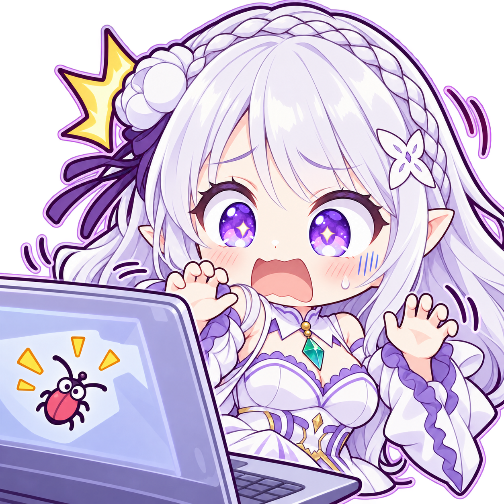
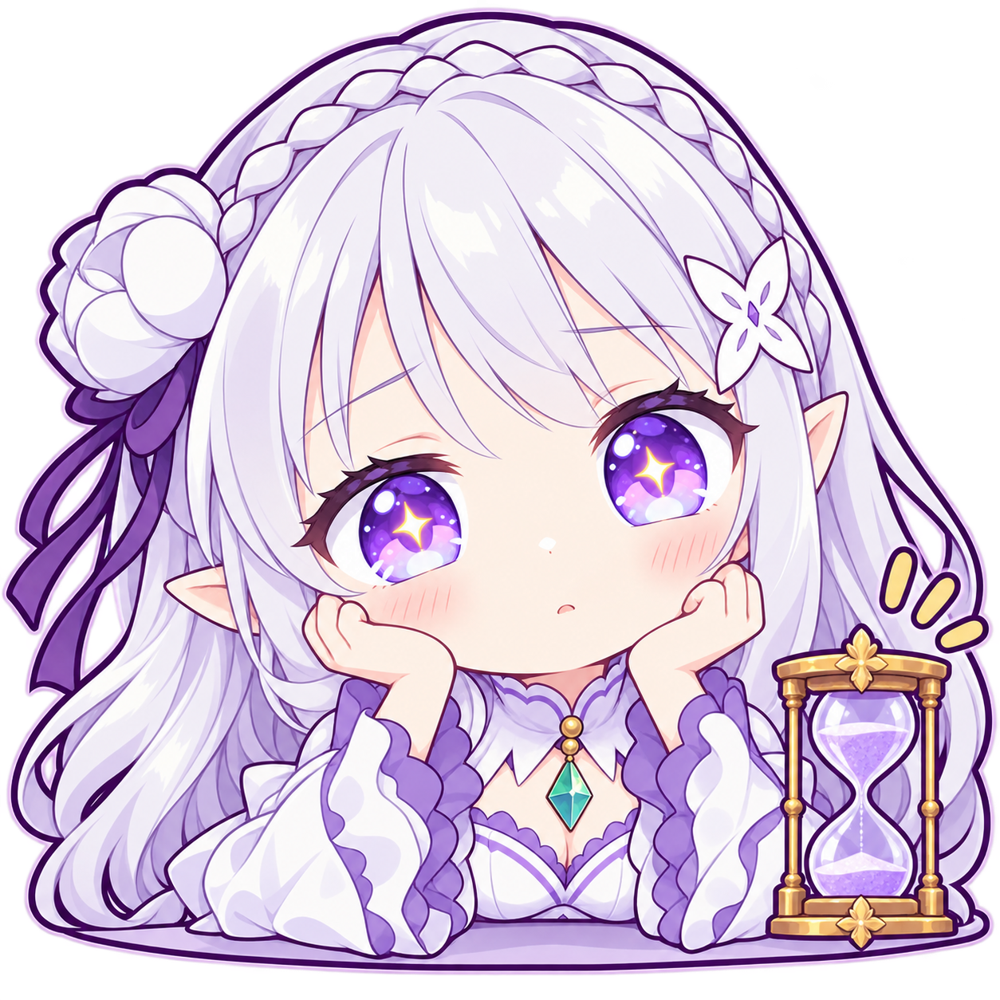

001 · affection/0001_affection.png
爱蜜莉雅闭眼笑着，双手在胸前比出爱心，周围浮着粉色小心心。适合直接表达喜欢、爱你、感谢陪伴和甜蜜回应。
EMILIA · v0.4.1 · 逐图语义
每条描述先写可见动作、表情和道具，再写建议聊天用途。标签用于区分动作与意图；文件名只作为定位标识。
已由 Codex 按图核对；尚未实测 AstrBot 安装、发送和向量检索。图片中的图标、线条和装饰不当作可读文字。
001 · affection/0001_affection.png
爱蜜莉雅闭眼笑着，双手在胸前比出爱心，周围浮着粉色小心心。适合直接表达喜欢、爱你、感谢陪伴和甜蜜回应。
002 · affection/0002_pat.png
爱蜜莉雅睁着闪亮的眼睛，笑着把两只手向前伸出，手掌朝下。适合撒娇求关注、伸手要抱抱，或以伸手动作表达亲近。
003 · affection/0003_hug.png
爱蜜莉雅闭眼露出满足的笑容，把紫色心形抱枕紧紧抱在怀里，周围都是爱心。适合表达珍惜、喜欢得舍不得放手、想抱抱和获得陪伴后的幸福。
004 · affection/0004_thanks.png
爱蜜莉雅在胸前合起双手，眼睛发亮，笑容温柔，身边点缀小花和星光。适合真诚道谢、感谢帮助、感激对方的心意。
005 · affection/0005_wave_heart.png
爱蜜莉雅俏皮地眨一只眼，一只手向前摊开，另一只手托着发亮的粉色爱心。适合送你一颗心、主动示好、传递喜欢和甜蜜互动。
006 · affection/0006_pat_received.png
爱蜜莉雅双手托着脸颊，闭眼微笑，脸颊泛红，周围飘着粉色爱心。适合收到夸奖或关心后的幸福、被宠爱的满足和甜甜地回应。
007 · angry/0001_angry.png
爱蜜莉雅皱眉鼓起脸颊，两只拳头攥在胸前，头侧出现红色生气符号和小气团。适合表达正在生气、对事情不满或可爱地抗议。
008 · angry/0002_stomp.png
爱蜜莉雅全身站立，鼓着脸攥紧拳头，一只脚用力跺地，脚边有冲击线，头顶冒着火苗。适合急得跺脚、气不过、强烈抗议或闹小脾气。
009 · angry/0003_shout.png
爱蜜莉雅皱着眉张大嘴，两只手拢在嘴边大声喊，旁边有放射线和气团。适合喊话制止、提高音量表达不满、催人注意自己的抗议。
010 · angry/0004_warning.png
爱蜜莉雅神情严肃地张嘴，举起一把玩具木槌，另一只手攥成拳头。适合开玩笑地警告、提醒别再闹、制止越界和表达要敲打一下。
011 · angry/0005_crossed_arms.png
爱蜜莉雅双臂抱在胸前，皱眉鼓脸，头侧冒出小气团。适合赌气、不服气、暂时不想理人和坚持自己的反对意见。
012 · angry/0006_steam.png
爱蜜莉雅把两只拳头举在脸颊旁，皱眉鼓脸，头顶和两侧冒出多团蒸汽状怒气。适合气得冒烟、憋着一肚子气、被反复惹恼。
013 · approval/0001_approval.png
爱蜜莉雅开心地同时竖起两个大拇指，眼睛闪亮，手边带着黄色强调线。适合称赞做得好、强烈认可、给对方点赞。
014 · approval/0002_ok_sign.png
爱蜜莉雅微笑着在脸旁用双手比出 OK 手势，拇指和食指圈成圆。适合确认没问题、答应请求、表示可以照办。
015 · approval/0003_pointing.png
爱蜜莉雅笑着向斜前方伸出食指，指尖旁有金黄色对勾，另一只手握拳。适合指出正确选项、肯定某个答案、表示就是这个。
016 · approval/0004_high_five.png
爱蜜莉雅笑着向前伸出一只张开的手掌，另一只手在胸前握拳。适合邀请击掌、庆祝合作成功、给伙伴加油。
017 · approval/0005_clap.png
爱蜜莉雅睁眼笑着，两只手在胸前相拍，手边有黄色拍手动效。适合为别人鼓掌、赞赏表现、祝贺对方完成任务。
018 · approval/0006_salute.png
爱蜜莉雅笑着把一只手举到额旁敬礼，另一只手握在胸前。适合收到指令后回应、认真领命、表示保证完成或致敬。
019 · comfort/0001_pat_back.png
爱蜜莉雅微笑着，双手轻搭在身前一块浅紫色抱枕状软垫上，神情温柔。适合轻声安抚、陪对方缓一缓、表达可以安心休息。
020 · comfort/0002_tissue.png
爱蜜莉雅微笑着向前递出一块带花纹的白色手帕，另一只手握在胸前。适合递纸巾式安慰、劝对方擦擦眼泪、关心难过的人。
021 · comfort/0003_hug_side.png
爱蜜莉雅笑着向前张开双臂和手掌，周围飘着粉色爱心。适合主动邀请拥抱、表达我在这里、欢迎对方来寻求安慰。
022 · comfort/0004_thumbs_up.png
爱蜜莉雅笑着把两只小拳头举在胸前，眼睛明亮，周围有黄色振奋线条。适合给正在努力的人打气、表达你可以的、鼓励再试一次。
023 · comfort/0005_calm.png
爱蜜莉雅微笑着向前伸出双手，手掌展开，旁边有轻晃的动作线和小爱心。适合温和地劝人别急、慢慢来、先放轻松。
024 · comfort/0006_proud.png
爱蜜莉雅微笑着把一只手轻放在胸口，身边点缀爱心和星光。适合由衷欣慰、为对方感到骄傲、表达真心支持和温柔肯定。
025 · confused/0001_confused.png
爱蜜莉雅歪着头，食指抵在下巴附近，微张着嘴，头旁浮着一个问号。适合没听懂、询问什么意思、对一件事感到疑惑。
026 · confused/0002_loading.png
爱蜜莉雅歪头发呆，一只手停在下巴旁，头顶浮着环形加载图案。适合脑子还没转过来、正在思考、需要时间消化信息。
027 · confused/0003_choice.png
爱蜜莉雅两只手分别拿着一张空白卡片，眼神偏向一边，嘴角紧张，脸上有汗滴，左右浮着问号。适合二选一、选择困难、拿不定主意。
028 · confused/0004_facepalm.png
爱蜜莉雅用一只手扶住额头，嘴微张，脸旁冒着汗，表情有些窘迫。适合看见低级失误后扶额、被问题难住、无奈地表示头疼。
029 · confused/0005_manual.png
爱蜜莉雅捧着一本展开的图解说明书，另一只手抵着下巴，头旁出现问号。适合看不懂说明、研究操作步骤、询问怎么使用。

030 · confused/0006_split.png
爱蜜莉雅把两根食指放在脸颊旁思考，左右分别出现蓝色左箭头和粉色右箭头，头顶有问号。适合纠结方向、面对两条路线、在不同方案之间摇摆。
031 · eating/0001_peel.png
爱蜜莉雅笑着捧住橘子，另一只手正在拉开长长的橘皮，露出里面的果肉。适合剥橘子、吃水果、分享水果和轻松的日常互动。
032 · eating/0002_bento.png
爱蜜莉雅开心地双手端出一个敞开的便当盒，里面装着饭团、蔬菜和配菜。适合晒午饭、邀请吃便当、展示准备好的餐食。
033 · eating/0003_noodles.png
爱蜜莉雅一手端着热汤面碗，一手拿筷子，把长面条送进嘴里，碗上冒着热气。适合正在嗦面、吃热乎的饭、忙着吃东西。
034 · eating/0004_icecream.png
爱蜜莉雅一手拿着紫色冰淇淋甜筒，另一只手用小勺舀起冰淇淋送到嘴边，脸颊微鼓。适合吃冰淇淋、享受甜品、夏日解馋。
035 · eating/0005_cook.png
爱蜜莉雅笑着举起锅铲，身前的锅里盛着蔬菜和食物，热气正在升起。适合正在做饭、准备开餐、分享烹饪进度。
036 · eating/0006_cheers.png
爱蜜莉雅眨着一只眼，笑着向前举起装有粉色饮品和水果片的高脚杯。适合举杯庆祝、一起干杯、庆祝相聚和完成一件事。
037 · entertainment/0001_entertainment.png
爱蜜莉雅双手握着游戏手柄，睁着闪亮的眼睛兴奋地笑。适合邀请开黑、正在打游戏、聊游戏时表达跃跃欲试。
038 · entertainment/0002_sing.png
爱蜜莉雅拿着麦克风张嘴唱歌，另一只手向外展开，周围飘着彩色音符。适合唱一首、邀请唱歌、分享音乐兴致和表演。
039 · entertainment/0003_dance.png
爱蜜莉雅全身跃起，一只手臂高举，一条腿弯起，裙摆和发丝随动作扬起，身边有彩纸和彩色弧线。适合开心跳舞、蹦起来庆祝、表达活力。
040 · entertainment/0004_photo.png
爱蜜莉雅双手举着相机对向前方，一只眼藏在相机后，镜头旁闪出亮光。适合拍张照、记录精彩瞬间、喊人看镜头。
041 · entertainment/0005_draw.png
爱蜜莉雅举着沾有彩色颜料的画笔，另一只手展示画着小猫、星星和爱心的画本。适合画画、展示涂鸦、分享创作成果。
042 · entertainment/0006_read.png
爱蜜莉雅微笑着双手捧住一本打开的紫色封面书，书封有金色装饰。适合安静看书、阅读故事、分享阅读时光。
043 · food/0001_food.png
爱蜜莉雅双手捧着金黄色夹心点心，吐出一点舌尖，嘴角有碎屑，眼睛亮晶晶。适合看到好吃的嘴馋、想吃点心、被美食吸引。
044 · food/0002_drink.png
爱蜜莉雅双手抱住花纹马克杯，凑近杯口，冒出的热气带着心形弧线，神情惬意。适合喝点热饮、暖暖身子、休息时慢慢喝一杯。
045 · food/0003_cake.png
爱蜜莉雅开心地端着插有一根点燃蜡烛的小蛋糕，周围飘着彩纸和爱心。适合生日祝福、庆祝纪念日、送上蛋糕和许愿。
046 · food/0004_omnom.png
爱蜜莉雅捧着被咬过的金黄色点心，鼓着腮帮子咀嚼，嘴边和周围散着碎屑。适合正在嚼东西、吃得津津有味、嘴里塞满零食。
047 · food/0005_snack.png
爱蜜莉雅笑着撕开一袋紫色包装的零食，袋口露出金黄色小块食物。适合拆零食、边聊天边吃、准备围观时拿出吃的。
048 · food/0006_takeout.png
爱蜜莉雅双手捧着一个合着盖子的棕色纸餐盒，开心地张嘴，盒子旁有黄色强调线。适合外卖到了、拿到打包餐、准备拆盒开饭。
049 · greeting/0001_greeting.png
爱蜜莉雅正面笑着伸出一只张开的手打招呼，另一只手握在胸前。适合初次见面说你好、群聊冒泡、轻快地向大家问好。
050 · greeting/0002_bye.png
爱蜜莉雅转身回头微笑，一只手举在身侧挥动，长发随着转身铺开。适合挥手告别、回头说再见、表示先走一步。
051 · greeting/0003_attention.png
爱蜜莉雅举着紫白色扩音喇叭，另一只手抬起招呼大家，神情明快。适合发布通知、召集大家、提醒注意接下来的消息。
052 · greeting/0004_welcome.png
爱蜜莉雅笑着朝前张开双臂，两只手掌展开，旁边飘着爱心。适合热情欢迎、迎接归来、表达快过来和欢迎加入。
053 · greeting/0005_morning.png
爱蜜莉雅怀抱一束白紫色鲜花，另一只手举起挥动，开心地问候。适合带着花打招呼、温柔早安、祝对方有美好的一天。
054 · greeting/0006_arrival.png
爱蜜莉雅从半开的木门旁探出身子，一只手扶着门边，另一只手笑着挥动。适合进门报到、表示我来了、回家时打招呼。
055 · happy/0001_happy.png
爱蜜莉雅眼睛闪亮，张嘴开心地笑，两只拳头兴奋地收在胸前，周围散着星光。适合听到好消息、满心期待、表达太好了和按捺不住的开心。
056 · happy/0002_cheering.png
爱蜜莉雅高举两面带紫色花纹的小旗，笑着摇旗，身边飘着彩纸和星光。适合为比赛或活动助威、应援打气、摇旗庆祝。
057 · happy/0003_laughing.png
爱蜜莉雅闭眼笑得张大嘴，双手遮在嘴前，脸颊红红的，头旁带着笑意动效。适合觉得太好笑、忍不住笑出声、被逗乐。
058 · happy/0004_clap.png
爱蜜莉雅张嘴开心地笑，双手在脸侧鼓掌，手边有密集的黄色拍手线条和星光。适合为好消息欢呼鼓掌、拍手叫好、热烈庆祝。
059 · happy/0005_party.png
爱蜜莉雅开心地举起双臂、张开手掌，头顶和身边落下五颜六色的彩纸。适合派对狂欢、热闹庆祝、一起庆功。
060 · happy/0006_victory.png
爱蜜莉雅笑着在两侧同时比出 V 字手势，身边有黄色强调线和星光。适合赢了比赛、任务顺利结束、晒出胜利和开心合影。
061 · mischief/0001_peekaboo.png
爱蜜莉雅从浅色挡板后探出身子，双手扒着边缘，一边眨眼一边开心地笑。适合突然探头逗人、躲猫猫、俏皮地出现。
062 · mischief/0002_prank_button.png
爱蜜莉雅带着淘气的笑容伸手按向一个巨大的红色按钮，另一只手握在脸旁。适合手痒想按一下、准备搞点小恶作剧、开玩笑地启动某件事。
063 · mischief/0003_caught.png
爱蜜莉雅双拳缩在胸前，睁大眼睛惊慌张嘴，额头有阴影竖线，脸旁冒出大量汗滴。适合做了小坏事被发现、突然露馅、心虚地表示糟了。
064 · mischief/0004_cool.png
爱蜜莉雅一只手扶着深色墨镜向下拉，露出闪亮的眼睛，另一只手比出手枪状手势，嘴角露出得意笑容。适合耍帅、摆酷、俏皮地说看我的。
065 · mischief/0005_tongue.png
爱蜜莉雅眨一只眼并吐出舌头，两根食指分别点着脸颊，周围有粉色强调线。适合扮鬼脸逗人、调皮回应、友好地说略略略。
066 · mischief/0006_hide.png
爱蜜莉雅躲在打开的棕色纸箱里，只露出头部和扒在箱沿上的两只手，眼睛悄悄向外看。适合躲起来围观、暗中观察、想暂时藏一下。
067 · money/0001_money.png
爱蜜莉雅开心地捧着一个紫色零钱包，周围飞着金色硬币。适合聊到钱时开心、表达赚钱的喜悦、财迷式满足。

068 · money/0002_payment.png
爱蜜莉雅拿着一张卡靠近读卡设备，视线专注，机器上有感应波纹。适合刷卡付款、结账买单、表示这笔我来付。
069 · money/0003_reward.png
爱蜜莉雅开心地双手捧着红色红包，红包口和周围散着金色硬币。适合收到红包、获得奖金、感谢打赏和分享奖励的喜悦。
070 · money/0004_budget.png
爱蜜莉雅拿着记账本和笔思考，身前摆着计算器和一摞摞金币。适合计算预算、核对收支、精打细算和认真记账。
071 · money/0005_sponsor.png
爱蜜莉雅笑着双手端出一个带投币口和爱心装饰的小盒子。适合求一点赞助、邀请打赏、礼貌地希望获得支持。
072 · money/0006_receipt.png
爱蜜莉雅双手展开一条很长的小票，皱眉张嘴，额头冒汗，周围飘着金币。适合看到账单后震惊、吐槽花钱太多、惊叹怎么这么贵。
073 · reply/0001_reply.png
爱蜜莉雅带着自信的笑容朝前伸出一只摊开的手，另一只手握拳收在胸前。适合主动接话、邀请对方继续说、热情地参与讨论。
074 · reply/0002_explain.png
爱蜜莉雅拿着细长指示棒指向红蓝黄三个圆点，另一只手掌朝上，张嘴微笑。适合分点说明、讲解步骤、解释给对方听。
075 · reply/0003_quiet.png
爱蜜莉雅把一根食指竖在嘴前，旁边的气泡里画着被斜线划掉的铃铛。适合提醒安静、小声一点、暂停打扰或保密。
076 · reply/0004_agree.png
爱蜜莉雅笑着竖起一根食指，另一只手握拳，头旁带着轻微动作线。适合赞同对方的说法、表示对的、接着补充一点。
077 · reply/0005_deny.png
爱蜜莉雅抿嘴鼓着脸，把两只前臂交叉成大大的 X，手边带着摆动线。适合明确拒绝、表示不可以、否定一个提议。
078 · reply/0006_wait.png
爱蜜莉雅双手托腮，带着平静的微笑看向前方，身旁浮着一个紫色沙漏。适合耐心等待回复、表示我等你、等待对方准备好。
079 · sad/0001_sad.png
爱蜜莉雅眉头下垂，双眼蓄满泪水并流过脸颊，两只手紧紧攥在胸前，嘴角委屈地弯着。适合伤心哭泣、感到委屈、难过得说不出话。
080 · sad/0002_pout.png
爱蜜莉雅抱膝坐着，双手托在脸侧，噘着嘴看向一旁，神情闷闷不乐。适合独自生闷气、被冷落后的失落、委屈地缩成一团。
081 · sad/0003_defeated.png
爱蜜莉雅无力地趴在木桌上，眼眶带泪，嘴角下垂，一只手摊在桌边。适合遭遇失败后泄气、被打击得趴下、表示今天撑不住了。
082 · sad/0004_comfort_me.png
爱蜜莉雅泪水挂满脸颊，一只手抓住衣袖，另一只手向前张开，委屈地张着嘴。适合主动求安慰、伸手求抱抱、难过时想让人陪伴。
083 · sad/0005_rain.png
爱蜜莉雅缩着肩膀，眼中含泪，双手攥在下巴旁，头顶一朵愁眉苦脸的小乌云正在下雨。适合心情低落、觉得倒霉、形容心里下雨了。
084 · sad/0006_sigh.png
爱蜜莉雅单手托腮，另一只胳膊搭在身前，半垂着眼睛，嘴边吐出一小团气。适合叹气、无奈、失望地表示唉或算了。
085 · shy/0001_shy.png
爱蜜莉雅把双手收拢在胸前，肩膀微缩，脸颊明显泛红，目光羞涩地偏向一旁。适合不好意思、被夸后害羞、拘谨地回应。
086 · shy/0002_blush.png
爱蜜莉雅双手捧着滚烫发红的脸颊，眼神柔软，嘴角带笑，周围浮着爱心。适合被甜言蜜语说得脸红、心动、害羞地回应喜欢。
087 · shy/0003_peek.png
爱蜜莉雅拉起一束长发遮住半边脸，只露出一只亮晶晶的眼睛和羞涩的笑容。适合害羞躲脸、偷偷看对方、想看又不好意思。
088 · shy/0004_bow.png
爱蜜莉雅闭着眼低下头，双拳轻轻收在胸前，脸上泛着红晕。适合腼腆致谢、礼貌地低头致意、害羞地接受夸奖。
089 · sleep/0001_sleep.png
爱蜜莉雅闭着眼打哈欠，一只手靠在张开的嘴前，身旁浮着紫色困倦气泡。适合眼睛快睁不开、开始犯困、准备去睡觉。
090 · sleep/0002_yawn.png
爱蜜莉雅半睁着惺忪的眼睛，抬手遮嘴打了一个大哈欠，眼角带着困倦的泪花。适合哈欠连天、睡眠不足、熬夜后撑着精神。
091 · sleep/0003_blanket.png
爱蜜莉雅蜷坐在紫色花纹毛毯里，双手抓着毯子边缘，一只眼困得闭起。适合裹毯休息、赖在温暖的角落、准备入睡或不想起身。
092 · sleep/0004_alarm.png
爱蜜莉雅睡眼惺忪地抱着正在响动的紫色闹钟，头发有些翘起，脸上露出惊扰和无奈。适合被闹钟叫醒、起床困难、还想再睡一会儿。
093 · surprised/0001_surprised.png
爱蜜莉雅睁大眼睛，嘴张成小圆形，两只拳头停在脸颊旁，头侧有黄色惊讶符号。适合突然听到意外消息、惊讶地问真的吗、感到出乎预料。
094 · surprised/0002_gasp.png
爱蜜莉雅睁大眼睛，用双手捂住嘴，头两侧出现黄色惊叹线条。适合震惊得捂嘴、被突然的消息惊到、一时说不出话。
095 · surprised/0003_jump.png
爱蜜莉雅受惊般整个人跳起，双腿弯曲，双拳缩在身前，张大嘴并冒汗，周围有尖锐冲击线。适合被吓一跳、突发状况让人弹起来、反应特别剧烈。
096 · surprised/0004_freeze.png
爱蜜莉雅睁大眼睛惊慌张嘴，双手僵在身前、手指张开，头发翘起，脸边有汗滴。适合突然慌住、吓得僵住、不知道下一步该怎么办。
097 · surprised/0005_jawdrop.png
爱蜜莉雅双手贴着脸颊，睁大眼睛，嘴张得很大，头侧有黄色惊叹线。适合惊掉下巴、看到难以置信的结果、夸张地表示哇。
098 · surprised/0006_thunder.png
爱蜜莉雅惊慌地张嘴并抬起双手，额头带汗，头顶出现一大片黄色闪电形冲击符号。适合被消息雷到、突然受到强烈冲击、吓得一激灵。
099 · teasing/0001_teasing.png
爱蜜莉雅眨着一只眼，俏皮地笑着，把一根食指放在嘴角旁。适合卖个关子、开个小玩笑、用心照不宣的语气逗对方。
100 · teasing/0002_tongue.png
爱蜜莉雅眨眼吐出一点舌尖，双手在胸前比出指尖爱心，旁边飘着粉色小心心。适合俏皮地示爱、撒娇逗人、带着喜欢开玩笑。
101 · teasing/0003_prank.png
爱蜜莉雅侧身回头笑，一根食指竖在嘴边，另一只手拿着喷出彩纸的小礼花筒。适合偷偷准备惊喜、假装保密、庆祝时淘气地逗人。
102 · teasing/0004_shrug.png
爱蜜莉雅眨着一只眼、吐出舌尖，两手向两侧摊开，掌心朝上。适合俏皮摊手、表示我也没办法、轻松自嘲或随你啦。
103 · teasing/0005_smug.png
爱蜜莉雅双手叉腰，眨一只眼，带着自信又得意的笑容。适合小小得瑟、表示我厉害吧、开玩笑地自夸。
104 · teasing/0006_clapback.png
爱蜜莉雅半眯着眼睛露出带笑的神情，侧着身子拍手，手边有黄色拍手线。适合熟人间带点调侃的鼓掌、玩笑地表示真有你的或看完表演后的打趣。
105 · tech/0001_loading.png
爱蜜莉雅单手托腮，另一根食指指着悬浮的蓝色环形加载图案，头旁还有问号。适合程序一直转圈、等待加载、疑惑怎么还没响应。

106 · tech/0002_bug.png
爱蜜莉雅在笔记本电脑后惊慌张嘴，双手抬起，电脑外壳上画着醒目的小虫图标，身边带着抖动线。适合突然发现 Bug、程序出问题、被错误吓一跳。
107 · tech/0003_success.png
爱蜜莉雅眨眼笑着高举一块检查清单板，上面有大大的绿色对勾和多个已勾选方框，另一只手振奋地握拳。适合检查通过、任务全部完成、验收成功。
108 · tech/0004_code.png
爱蜜莉雅戴着圆框眼镜，神情专注，双手在带有彩色方块装饰的笔记本电脑键盘上操作。适合专心写代码、开发中、正在敲键盘处理技术任务。
109 · tech/0005_server.png
爱蜜莉雅拿着螺丝刀，认真地在打开上盖的服务器机箱里操作，前面板亮着彩色指示灯。适合检修服务器、维护硬件、动手修设备。
110 · tech/0006_error.png
爱蜜莉雅坐在冒出灰烟的笔记本电脑前，一只手扶额，另一只手停在键盘上，神情焦急又无奈。适合电脑出故障、系统崩了、设备出问题让人头疼。
111 · tired/0001_rubbing_eyes.png
爱蜜莉雅一只手揉眼睛，另一只手遮着张开的嘴打哈欠，眼角湿润，旁边飘着困倦气泡。适合困得揉眼、熬夜眼酸、勉强保持清醒。
112 · tired/0002_slouch.png
爱蜜莉雅趴在圆形木桌上，头枕着胳膊，一只眼闭着，另一只眼半睁，嘴微微张开。适合累趴了、趴桌打盹、精力耗尽想歇一下。
113 · tired/0003_coffee.png
爱蜜莉雅双手抱着盛有棕色热饮的杯子，眼皮低垂，头旁有困倦符号。适合困了靠咖啡提神、强撑精神、需要续命一杯。
114 · tired/0004_stretch.png
爱蜜莉雅一边张嘴打哈欠，一边把双臂高高伸展开来，双手握拳，眼角带着困意。适合久坐后伸懒腰、活动一下、刚醒时舒展身体。
115 · tired/0005_bedtime.png
爱蜜莉雅抱着一个白色枕头，一只手揉眼，张嘴带着困意。适合抱枕准备睡觉、道晚安、表示今天要去休息了。

116 · tired/0006_waiting.png
爱蜜莉雅双手托腮，嘴微微噘起，桌边摆着一个紫色沙漏。适合等得无聊、等待太久、想问怎么还没好。
117 · work/0001_work.png
爱蜜莉雅戴着细框眼镜，皱眉盯着笔记本电脑并敲键盘，脸旁带着汗滴。适合忙着工作、赶任务、压力下认真处理事务。
118 · work/0002_note.png
爱蜜莉雅一手拿笔一手扶着写字夹板，神情认真又略显紧张，脸旁带着汗滴。适合认真记录、记下要求、整理待办事项。
119 · work/0003_troubleshoot.png
爱蜜莉雅坐在电脑前，一只手托住脸，另一只手举着尚未插入的 USB 插头，旁边浮着问号，脸上带汗。适合排查连接故障、设备连不上、拿不准线该怎么接。
120 · work/0004_break.png
爱蜜莉雅双手拿着一杯冒热气的饮料，眯眼笑得很放松，身体微微侧转。适合忙完休息一下、工作间隙喝一杯、享受短暂放松。
没有匹配项，试试更短的关键词。
点击图片可查看原图。此页用于逐图浏览；插件读取包根目录的 semantic_metadata.json。